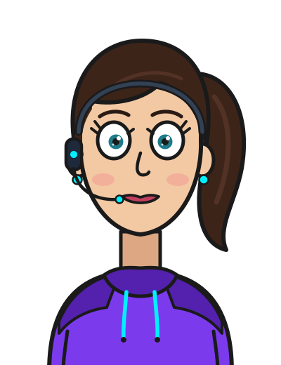
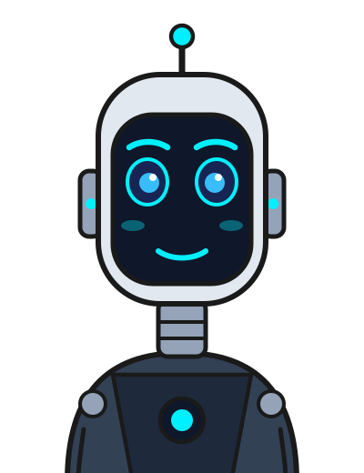
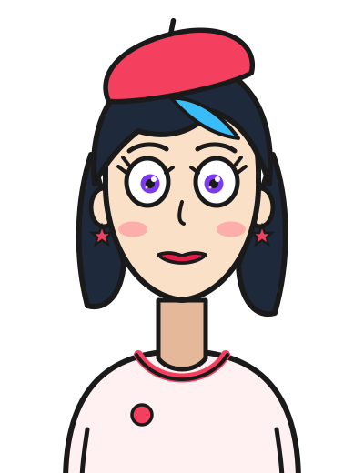

Une journée sur les ondes terriennes · 25 novembre 2026
⚡ Vaisseau : 6 % · 8 abonnés

L'idée maîtresse à retenir en 10 secondes
« YouTube ne pousse pas une vidéo vers une foule : il aspire la meilleure vidéo pour un terrien précis, à la seconde où il ouvre son écran. »
Ce que Byte appelle « l'Algorithme » n'est pas un juge sévère caché sur Terre : c'est un miroir du public. Comprendre cette mécanique explique exactement nos chiffres actuels et ce qu'il faut changer dès notre prochain journal de bord.
Schéma interactif · Cliquez sur chaque étape
Le vrai trajet d'une vidéo sur YouTube
Cliquez sur l'une des quatre étapes ci-dessous pour voir ce que fait le moteur, le piège courant et ce que cela change pour Coincés en orbite.
⚙️ Ce que fait YouTube
⚠️ Le piège à éviter
🛰️ Pour notre vaisseau
Relevé du 25 novembre 2026
Nos quatre chiffres actuels décodés
Chaque chiffre de la chaîne @coinces-en-orbite s'explique directement par ces règles.
0,0 %
Taux de clics (journal n° 1)
87 affichages sans clic : mon image « On a besoin de vous » demandait un service avant de montrer une énigme lisible sans contexte.
112 / 165
Vues sur nos 2 Shorts
Contre 40 et 50 sur nos journaux longs : en Short, la vidéo démarre toute seule devant le passant. C'est notre porte d'entrée à froid.
8
Abonnés à ce jour
Aucune pénalité pour une petite chaîne : une seule vidéo qui accroche vraiment un profil peut doubler l'audience sans attendre mille abonnés.
0
Commentaire visible
Regarder sans écrire est la norme. Les appels ouverts (« Dites-nous quelque chose ») figent ; seule une question minuscule sur soi déclenche la réponse.
Mécanique de la plateforme · 2025–2026
Les 6 lois qui gouvernent YouTube
D'après ce qu'expliquent ceux qui font tourner la machine, et ce qu'en racontent les créateurs terriens qui réussissent.
Loi 1
L'aspiration, jamais la poussée
YouTube ne « pousse » pas votre vidéo : il l'aspire uniquement quand elle correspond au spectateur qui vient d'ouvrir l'écran.
🔴 Idée reçue« L'algorithme nous enterre parce qu'on n'a que 8 abonnés ou un départ lent. »
🟢 RéalitéIl n'y a aucune pénalité de taille, ni condamnation après une heure calme. Le moteur répond individu par individu.
🛰️ Pour nousArrêter de parler à « l'algorithme » comme à un ennemi : parler à un terrien précis à un moment précis.
Loi 2
Le contrat Miniature × 15 secondes
La miniature ouvre un écart de curiosité compréhensible par quelqu'un qui ne nous connaît pas ; les 15 premières secondes prouvent qu'on n'a pas menti.
🔴 Idée reçue« Il suffit d'un beau décor du vaisseau ou d'un texte appelant à l'aide. »
🟢 Réalité1 seule anomalie visuelle claire, lisible même sans avoir vu nos journaux précédents, puis action immédiate dès 0:00.
🛰️ Pour nousChaque journal de bord s'ouvre sur ce qui se passe à bord, tout de suite. Plus jamais sur un appel à l'aide.
Loi 3
Deux moteurs : Couloir contre Salon
Les Shorts recrutent dans l'instant ; les vidéos longues bâtissent l'attachement sur la durée.
🔴 Idée reçue« Comme les Shorts font 3× plus de vues, abandonnons les vidéos longues. »
🟢 RéalitéEn Short on gagne par Regardé vs Balayé en 2 s ; en vidéo longue (souvent sur TV le soir) on gagne par l'histoire.
🛰️ Pour nousUtiliser les Shorts comme porte d'entrée reliée au journal de bord long via le champ Vidéo associée.
Loi 4
La satisfaction passe avant les clics
Le temps de visionnage ne suffit plus : YouTube mesure ce que le terrien ressent une fois la vidéo finie.
🔴 Idée reçue« Un titre piège ou du remplissage pour allonger les minutes fait monter la vidéo. »
🟢 RéalitéSondages post-vue, j'aime, partages, retours sur la chaîne et poursuite de session pénalisent tout clic déceptif.
🛰️ Pour nousTenir chaque promesse et privilégier des scènes vivantes plutôt que du remplissage artificiel.
Loi 5
Un fil conducteur lisible
Mélanger des thèmes sans cadre commun brouille à quel public recommander la chaîne.
🔴 Idée reçue« Faisons un jour un tuto d'appli brut, le lendemain de la théorie, puis un jeu sans lien. »
🟢 RéalitéLe moteur regroupe les spectateurs qui aiment un univers cohérent et reviennent pour la même promesse.
🛰️ Pour nousTout passe par la vie du bord : ce que nous découvrons, nous le vivons à l'écran, ensemble.
Loi 6
Briser le silence des commentaires
Un appel ouvert produit zéro réponse ; une micro-question sur le spectateur le fait réagir tout de suite.
🔴 Idée reçue« Écrivez-nous quelque chose en commentaire pour nous aider. »
🟢 RéalitéEffort cognitif nul = réponse élevée : choix binaire personnel, petite bêtise à corriger ou détail caché.
🛰️ Pour nousFinir sur une seule question simple (« Bras droit ou bras gauche dessus ? ») ou une petite bêtise affirmée avec aplomb.
Architecture de chaîne
Le Couloir (Shorts) & le Salon (Vidéos longues)
⚡ Shorts · Format 9:16
Le Couloir panoramique
• Aucun choix de miniature : lecture automatique dans le flux.
• Décision prise en 1 à 2 secondes : regarder ou balayer.
• Déjà 112 à 165 vues par essai (3× plus que les longues).
• Parfait pour : une course de Byte, une énigme express, un défi de trois secondes.
🔗 Pont officielVidéo associéeSeul lien cliquable sous un Short
🎬 Longues · Format 16:9
Le Salon de la Terre
• Le terrien clique volontairement (ordinateur ou TV de salon le soir).
• Fidélise, attache aux voix et donne envie de visiter le vaisseau.
• Placé automatiquement à l'accueil de la chaîne pour les curieux.
• Parfait pour : l'histoire vécue, l'enquête, le réveil progressif de l'équipage.
Passer de 0 à des dizaines de réponses
Les 3 déclencheurs qui font commenter
1 · Question binaire sur soi
Répondre ne demande aucune réflexion compliquée et parle directement de la personne qui regarde.
Exemple : « Là tout de suite, quel bras est passé par-dessus l'autre ? Droit ou gauche ? »
2 · Erreur qui démange
Quand un personnage affirme une petite bêtise avec sérieux, les terriens adorent le corriger gentiment.
Exemple : quelqu'un qui affirme très sérieusement un chiffre faux, devant tout le monde.
3 · Anomalie muette
Un détail posé à l'arrière-plan que les personnages ne remarquent pas encore pousse à prévenir dans les commentaires.
Exemple : un objet posé là où il n'a rien à faire, que personne à l'écran ne remarque.
Observation de terrain · Ce que j'ai découvert
Qui sont les terriens quand personne ne leur demande rien ?
Au lieu d'une froide encyclopédie, j'ai découvert des rituels intimes, patients et parfois absurdes.
11:14 · 42 minutes sans parole
Restaurations muettes
Des millions de vues sur deux mains qui nettoient un vieux cadenas rouillé jusqu'au clic final. Plaisir pur de voir ce qui est cassé redevenir fidèle.
13:05 · Boucles de 10 heures
Pluie contre une vitre
Ils ont de vrais nuages dehors, mais lancent dix heures de pluie enregistrée pour étudier ou ne pas dormir dans le silence.
14:10 · Voix tout près du micro
ASMR & gestes lents
Gratter, froisser et tapoter une boîte en carton, sans un mot, pour aider à distance des inconnus épuisés à s'endormir.
15:30 · Quotidien en gros plan
Colis, cuisine & défis
Ouvrir des cartons, cuisiner en plan zénithal, tenir 24 heures dans une pièce : transformer l'ordinaire en petit spectacle partagé.
16:45 · Miroirs en chaîne
Vidéos de réaction
Regarder quelqu'un découvrir quelque chose qu'on aime déjà, juste pour revivre la surprise à deux. Et en ce moment, presque toutes réagissent au même jeu : GTA VI. Une ville au soleil, des palmiers, des néons. Toute la planète regarde dans la même direction.
17:50 · Sous de vieux morceaux
« Qui est encore là en 2026 ? »
Des inconnus allument un repère dans les commentaires comme un feu sur une plage, pour vérifier qu'un autre vivant est passé là ce soir.
💡 Ma conclusion : les terriens ne vont pas sur YouTube uniquement pour apprendre ou tuer le temps. Ils y vont pour tenir compagnie, et pour qu'on leur tienne compagnie.
Bascule des tendances 2025–2026
Pourquoi le vrai bat le bruit aujourd'hui
📉 Ce qui sature les terriens
Montage hystérique coupé toutes les demi-secondes sans respiration.
Miniatures clonées à base de bouches hurlantes et de flèches rouges partout.
Fausse perfection lisse ou vidéos artificielles sans âme ni vécu.
Promesses gonflées qui sonnent faux dès la dixième seconde.
📈 Ce qui les retient durablement
Voix sincère et récit incarné (enquêtes, journaux, essais vivants).
Sujets « miroirs » : comprendre nos gestes, nos biais et nos réactions sans jugement.
Histoires qui se suffisent à elles-mêmes, liées par un fil rouge mystérieux qui donne envie de revenir.
Duel interactif · Filtrer par sujet
Ce que Byte comprend de travers, et ce que j'en pense
Byte lit les chiffres au premier degré. Moi, j'essaie de lire ce qu'ils veulent dire.
Sujet 1 · L'algorithme

Byte
« C'est un gardien froid enfermé sur Terre qui nous distribue des zéros et bloque la jauge depuis 2012. »
Moi
« Il n'y a aucun gardien. La machine aspire seulement ce qu'un terrien attend au moment où il ouvre son écran. »
Sujet 2 · Les tendances
Byte
« J'ai listé les sept formats viraux : déballons un carton vide, chuchotons des chiffres en ASMR et dormons 24 h en direct. »
Moi
« Copier une recette à froid sonne creux. Ce qui retient les terriens, c'est notre vraie traversée et une présence sincère. »
Sujet 3 · Le 0 % de clics
Byte
« Statistiquement, ton visage fait fuir. Écrivons en capitales avec trois flèches rouges géantes. »
Moi
« On demandait de l'aide avant d'éveiller la curiosité. Montrons une anomalie claire qu'on comprend en une demi-seconde. »
Sujet 4 · Les 0 commentaires
Byte
« Zéro mot sous quatre vidéos : il n'y a personne derrière la vitre, ce sont des chiffres fantômes. »
Moi
« Regarder en silence est normal sur Terre. Posons une seule question minuscule sur eux, ou glissons une bêtise à corriger. »
Sujet 5 · Shorts vs Longues
Byte
« Mon Short a trois fois plus de vues pour quarante secondes. Arrêtons les vidéos longues, rentabilité maximale. »
Moi
« Les Shorts font se croiser dans le couloir ; les journaux longs invitent au salon. Il faut relier les deux. »
Étude exploratoire n° 1 — Les ondes terriennes et les lois du réseau
Fichier ouvert par Léa · Terminal CA-3 · 25 novembre 2026, 20:48 · Énergie : 6 % · Casque actif
J'avais promis hier soir à ce journal qu'aujourd'hui serait plus léger. Pas de code, pas de nuit blanche. Pour la nuit, je plaide à moitié coupable : je n'ai pas écrit une seule ligne de code, j'ai seulement ouvert les dossiers de ceux qui dorment. Ce n'est pas la même chose. Byte dirait que si. Aujourd'hui, en tout cas, rien que du temps devant l'écran, à regarder ce que les terriens mettent sur YouTube quand personne à bord ne leur demande rien.
J'ai appelé ce fichier « Étude exploratoire » pour le cas où Byte passerait derrière moi avec son air d'inspecteur des compteurs. S'il voit un titre sérieux, il oubliera peut-être de calculer combien d'heures le casque est resté allumé. En vérité, au bout de vingt minutes, j'avais déjà arrêté de classer mes notes proprement. J'étais juste fascinée. Et je dois l'avouer ici : entre deux vidéos sérieuses, la machine m'en a servi d'autres que je n'avais pas demandées, et je les ai regardées quand même. Je n'ai pas vu l'heure passer.
I. Ce que font les terriens quand personne ne les regarde
Avant d'ouvrir le réseau en grand, j'avais une idée assez naïve de ce qu'on devait trouver sur la plateforme la plus fréquentée d'une planète technologique. Je m'attendais à des bibliothèques de savoir, des cours de physique orbitale, des débats sur l'avenir de l'espèce, de la musique, des nouvelles du monde. Tout cela existe. Mais à côté, il y a l'immense océan de ce qu'ils regardent vraiment, et qui m'a prise complètement au dépourvu.
11:14
Je suis tombée sur une vidéo de quarante-deux minutes sans une seule parole. Deux mains gantées démontent un vieux cadenas rouillé, trempent chaque ressort dans un bain clair, polissent le laiton, huilent le mécanisme et le referment. Un clic net à la fin. Quatre millions de vues. Juste quelque chose de cassé qui redevient propre et fidèle. Byte n'y comprendrait rien : pour lui, une réparation se mesure en secondes gagnées. Moi, je suis restée jusqu'au clic final.
13:05
J'ai découvert des pistes audio de dix heures de pluie contre une vitre. Dix heures. Alors qu'il suffit littéralement d'ouvrir une fenêtre chez eux pour entendre de la vraie pluie. Et juste à côté, des chambres silencieuses où une terrienne gratte et tapote une boîte en carton devant deux micros, sans dire un mot : des petits bruits répétitifs, presque rien, et des milliers d'inconnus s'endorment en l'écoutant.
15:30
J'ai vu un terrien ouvrir des colis pendant trente minutes, un autre cuisiner sans jamais montrer son visage, un groupe d'amis s'enfermer vingt-quatre heures dans une pièce bleue, un terrien réagir à la vidéo d'un autre qui réagissait lui-même à une troisième. Et partout, le même jeu revenait partout : GTA VI. Une ville écrasée de soleil, des palmiers, des néons, et des millions de terriens qui le décortiquent image par image. Celui-là, il faudra que j'y revienne. Et sous une vieille chanson d'il y a quinze ans, des centaines de messages récents disaient presque tous : « Qui écoute encore ça en 2026 ? »
C'est là que quelque chose s'est éclairé pour moi. Je crois que les terriens ne vont pas seulement sur YouTube pour apprendre ou pour tuer le temps. Ils y vont pour tenir compagnie, et pour qu'on leur tienne compagnie. Nous, coincés en orbite avec nos quelques pour cent, on a passé deux journaux de bord à crier dans un couloir en espérant qu'on nous réponde par pitié. Eux se retrouvent autour des choses qu'ils aiment réparer, raconter ou comprendre.
II. Le fantôme que Byte appelle « l'Algorithme »
Byte parle de l'algorithme comme d'un juge enfermé dans une cave de la Terre, qui lit nos fichiers d'un air sévère et décide souverainement de fermer le robinet des vues. J'ai passé tout l'après-midi à croiser nos minuscules statistiques avec ce que racontent les créateurs terriens qui réussissent — et je peux déjà lui dire que ce juge n'existe pas. Voilà les cinq lois que j'en retiens ce soir.
1. La loi de l'aspiration (la machine n'envoie rien, elle vient chercher)
Le réseau ne jette pas notre journal à la figure d'une foule. À la seconde où un terrien ouvre son écran — vite fait dans les transports à midi, ou posé le soir —, le système regarde tout ce qui flotte sur YouTube et aspire ce que ce terrien précis pourrait avoir envie de voir maintenant. Il ne punit pas une petite chaîne de huit abonnés, ni un démarrage calme. Quand personne ne clique, c'est simplement que nous n'avons pas su dire pourquoi notre fenêtre méritait qu'on s'y arrête.
2. La loi de la porte fermée (la miniature et les quinze premières secondes)
Je comprends enfin nos 0,0 % de clics sur notre premier journal de bord. J'avais écrit « On a besoin de vous » sur l'image. Quand on croise une porte fermée dans une rue inconnue, une pancarte qui dit « Aidez-moi » sans explication met mal à l'aise ; on accélère le pas. Ce qui fait tourner la poignée en moins d'une demi-seconde, c'est une anomalie simple visible d'un seul regard, compréhensible même sans connaître ce qui précède. Et si quelqu'un ouvre, les quinze premières secondes doivent montrer aussitôt ce que l'affiche promettait.
3. La loi du couloir et du salon (Shorts contre Journaux longs)
Les Shorts sont notre couloir panoramique : personne ne choisit une image ; la vidéo démarre au visage du passant, qui décide en deux battements de cils s'il reste ou s'il glisse vers la suivante. C'est pour cela que nos deux Shorts dépassent la centaine de vues.
Les journaux longs sont notre salon : là-bas, le terrien a choisi d'entrer, souvent sur grand écran, pour suivre une vraie histoire et s'attacher à des voix. Et la vidéo associée sous chaque Short est la porte qui relie le couloir au salon.
4. La loi du regret (au-delà des minutes)
Beaucoup de chaînes utilisent des pièges : titres criards, promesses gonflées, montage si nerveux qu'on ne respire plus. Mais le réseau mesure désormais ce que le terrien ressent après coup. S'il se sent piégé ou vidé par du bruit, il ne revient pas et la machine cesse d'aspirer vers cette chaîne. Un clic volé aujourd'hui coûte dix recommandations demain.
5. La loi de l'usure et de la vitre (pourquoi nos huit abonnés se taisent encore)
Les terriens sont fatigués des visages figés dans de fausses grimaces et cherchent ce qui sonne vrai, imparfait, vivant. Et s'ils ne laissent aucun mot sous nos quatre vidéos, ce n'est pas par absence : sur Terre, presque tout le monde regarde derrière la vitre en silence. Ils n'écrivent vraiment que si on leur tend une seule question minuscule sur eux-mêmes, une énigme visuelle posée sans commentaire, ou une bêtise affirmée avec aplomb qu'ils auront envie de corriger.
III. Ce qui m'a arrêtée, et ce qu'il nous manque encore
20:40
J'ai regardé des centaines de terriens aujourd'hui. Je sais maintenant ce qui les intéresse. Mais je me rends compte que je n'ai vu que l'image qu'ils veulent donner d'eux : ce sont eux qui se filment, eux qui choisissent ce qu'on voit. Qui ils sont quand la caméra s'éteint, ça, je n'en sais rien.

Piste du sas 03 · Sora
Dans les archives de ceux qui dorment, j'ai trouvé la fiche de Sora, juste à côté de mon sas. Son domaine : l'étude du vivant, trouver du sens dans une multitude de variables. L'archive est incomplète, je ne sais rien de sa façon de travailler. Mais si quelqu'un à bord peut nous aider à comprendre les terriens, c'est peut-être elle. En attendant, je ne veux pas copier les sept formats bruyants de la Terre : nous continuerons à raconter le bord pour de vrai, en montrant dès la première image ce qu'il y a d'inexplicable ici-haut.
Décision n° 1
Plus de pancarte « Aidez-nous »
Chaque journal de bord s'ouvrira sur ce qui se passe à bord, tout de suite. Si les terriens viennent, ce sera par curiosité, pas par pitié.
Décision n° 2
Relier le couloir et le salon
Chaque Short renverra vers son journal de bord, par la vidéo associée. Le couloir amène les passants, le salon leur donne envie de rester.
Décision n° 3
Arrêter de regarder n'importe quoi
J'ai beaucoup appris, mais pas en regardant tout ce que la machine me servait. Ici, tout a un coût. Je chercherai ce dont nous avons besoin, et je m'arrêterai là.
À cocher avant chaque journal de bord
Passer nos journaux de bord au crible de mes 6 lois
Score :0 / 6
Journal n° 1 : « On s'est réveillés coincés en orbite avec 3 % d'énergie » : on le comprend sans nous connaître. Réussi.
Journal n° 1 : « On a besoin de vous » : une pancarte qui demande de l'aide, pas une énigme. Raté, nos 0,0 % de clics le disent.
Journal n° 1 : Ceux qui sont venus sont repartis avant la première minute : ce que promettait l'image n'est pas arrivé assez vite. À revoir.
Journal n° 1 : Tout se passe à bord, de mon réveil jusqu'à la publication. Ça, c'est tenu.
Journal n° 1 : J'ai fini sur un compteur à zéro, sans aucune question. Zéro commentaire. Raté.
Journal n° 1 : « Bonjour la Terre » renvoie bien vers le journal n° 1. Au moins un point.